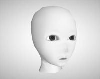

glb形式で出力したファイルです。
キャプチャ画像は「glTF Viewer」(https://gltf-viewer.donmccurdy.com/)を使用しています。
ライセンスはCC BY 4.0 としています。
ご自由にお使いくださいませ。
| 形状名 | Shade3Dのファイル | glbファイル | 説明 |
|---|---|---|---|
| Apple 2018/06/30 Update : 2018/10/07. |
apple.shd | apple.glb (110KB) apple_draco_no_vertexColor.glb (89KB) apple_draco.glb (90KB) |
リンゴの形状。 頂点カラーを使用。 1Meshに1Primitive。 マテリアルとしてDoubleSidedを使用。  [apple.glb] 未圧縮 : 110KB [apple_draco_no_vertexColor.glb] Draco圧縮 + 頂点カラー未使用 : 89KB [apple_draco.glb] Draco圧縮 + 頂点カラー使用 : 90KB |
| Apple cut 2018/06/30 Update : 2018/10/07. |
apple_cut.shd |
apple_cut.glb (58.1KB) apple_cut_draco.glb (49.0KB) apple_cut_vert_share.glb (57.6KB) apple_cut_vert_share_draco.glb (48.5KB) |
リンゴを半分に切った形状。 フェイスグループ（1メッシュに複数のマスターサーフェス（マテリアル）割り当て）を使用。  [apple_cut.glb] 未圧縮 : 58.1KB [apple_cut_draco.glb] Draco圧縮 : 49.0KB 「Mesh内のPrimitiveの頂点情報を共有」をオン1Mesh内の複数Primitivesにて、頂点情報（頂点座標/法線/UV）を共有して使用。[apple_cut_vert_share.glb] 未圧縮 : 57.6KB [apple_cut_vert_share_draco.glb] Draco圧縮 : 48.5KB |
| Dish 2018/06/30 |
dish.shd | dish.glb | 皿の形状。 テクスチャイメージを使用しない。 |
| Fork 2018/06/30 |
fork.shd | fork.glb | フォークの形状。 金属の反射表現。 OpenSubdivの使用。 
|
| Cyawan 2018/06/30 |
cyawan.shd | cyawan.glb | 曜変天目茶碗（風)の形状。 Substance Painterから出力したglbをShade3Dにインポートしたもの。 Occlusion/Roughness/Metallicが1テクスチャにパックされている。 
|
| Grass 2018/06/30 |
grass.shd | grass.glb | 草の形状。 頂点カラーを使用。 マテリアルとしてDoubleSidedを使用。 拡散反射のマッピングレイヤで「アルファ透明」を使用(glTFのALPHA_MASK/alpha cutoffを使用)。 |
| Rocks and trees and grass 2018/06/30 |
rocks_trees_ao.shd | rocks_trees_ao.glb | 木と岩と草のシーン。 複数のテクスチャイメージと形状を使用。 頂点カラーを使用。 マテリアルとしてDoubleSidedを使用。 拡散反射のマッピングレイヤで「アルファ透明」を使用(glTFのALPHA_MASK/alpha cutoffを使用)。 |
| Minotauros 2018/07/02 |
minotauros_attack.shd |
minotauros_none_motion.glb minotauros_bone_skin.glb minotauros_motion.glb |
ボーン＋スキンのモーションがある形状。 ミノタウルス/minotaurosを使用。 [minotauros_none_motion.glb] 「ボーンとスキンを出力」Off、「アニメーションを出力」Off ボーンとスキン情報を除外してglb出力。 [minotauros_bone_skin.glb] 「ボーンとスキンを出力」On、「アニメーションを出力」Off ボーンとスキン情報を追加、モーション情報は除外してglb出力。  [minotauros_motion.glb] 「ボーンとスキンを出力」On、「アニメーションを出力」On ボーンとスキン情報を追加、モーション情報を追加してglb出力。 |
| occlusion_01 2018/07/15 |
occlusion_01.shd | occlusion_01.glb | AO MapをOcclusionのテクスチャとして割り当て。 複数のテクスチャイメージと形状を使用。 
|
| occlusion_leaves 2018/07/15 |
occlusion_leaves.shd | occlusion_leaves.glb | AO MapをOcclusionのテクスチャとして割り当て(地面の円の部分)。 複数のテクスチャイメージと形状を使用。 頂点カラーを使用。 マテリアルとしてDoubleSidedを使用。 拡散反射のマッピングレイヤで「アルファ透明」を使用(glTFのalphaModeでALPHA_MASK/alpha cutoffを使用)。 
|
| lodge 2018/07/19 |
lodge.shd | lodge.glb | AO MapをOcclusionのテクスチャとして、地面と建物に割り当て。 建物で2つのUV情報を保持、AO MapでUV2を使用。 複数のテクスチャイメージと形状を使用。 表面材質で「透明」を使用(glTFのalphaModeでBLENDを使用、pbrMetallicRoughness-baseColorFactorでAlpha要素を使用)。  「glTF Viewer」では、Direct Intensityを0に、Ambient Intensityを0.8など大きめの値にしてください。 （影の表現がないため、Occlusionの確認はデフォルトでわかりにくいため） |
| Yunomi 2018/08/16 |
Yunomi.shd |
Yunomi_normal_05.glb Yunomi_normal_10.glb Yunomi_normal_20.glb |
法線マップの強さ(scale)を変更する検証。 [Yunomi_normal_05.glb] 法線マップの強さ 0.5。 [Yunomi_normal_10.glb] 法線マップの強さ 1.0。 [Yunomi_normal_20.glb] 法線マップの強さ 2.0。  |
| normal_test_01 2018/09/02 |
normal_test_01.shd |
normal_test_01.glb |
Normal Map時の内部的なTangent Space検証用。 以下のように、UVでの面の面積がないものが存在。 左が法線マップ未使用、右が法線マップ使用。 側面のテクスチャが間延びしているのは正しい表現です。 |
| normal_test_02 2018/09/02 |
normal_test_02.shd |
normal_test_02.glb |
Normal Map時の内部的なTangent Space検証用。 以下のように、UVをあえてバラバラに向きを変えて格納。 「Test normal」と出っ張って表示されていれば正しい表現です。 |
| draco_test 2018/10/04 |
draco_test.shd |
draco_test.glb (2.6MB) draco_test_draco.glb (0.3MB) |
Draco圧縮の検証用。 57088頂点数、57088四角形のポリゴンメッシュ1つ。 テクスチャイメージ未使用。 [draco_test.glb] 未圧縮 : 2.6MB [draco_test_draco.glb] Draco圧縮 : 0.3MB |
| face_test 2018/10/04 |
face_test.shd |
face_test.glb (78.8KB) face_test_draco.glb (63.5KB) face_test_weight.glb (78.8KB) face_test_weight_draco.glb (63.5KB) face_test_vert_share.glb (77.6KB) face_test_vert_share_draco.glb (69.6KB) |
Morph Targets/「Mesh内のPrimitiveの頂点情報を共有」/Draco圧縮の検証用。 １Meshに2Primitives。 2つのテクスチャイメージ使用。 Morph Targetsの割り当て。  Morph Targetsのウエイト 0.0[face_test.glb]未圧縮 : 78.8KB [face_test_draco.glb] Draco圧縮 : 63.5KB Morph Targetsのウエイトを指定[face_test_weight.glb]未圧縮 : 78.8KB [face_test_weight_draco.glb] Draco圧縮 : 63.5KB 「Mesh内のPrimitiveの頂点情報を共有」 On1Mesh内の複数Primitivesにて、頂点情報（頂点座標/法線/UV）を共有して使用。[face_test_vert_share.glb] 未圧縮 : 77.6KB [face_test_vert_share_draco.glb] Draco圧縮 : 69.6KB |
| multiplePrimitives 2018/10/12 |
multiplePrimitives.shd |
multiplePrimitives.glb (52.3KB) multiplePrimitives_draco.glb (51.7KB) multiplePrimitives_vert_share.glb (51.6KB) multiplePrimitives_vert_share_draco.glb (51.4KB) |
Morph Targets/「Mesh内のPrimitiveの頂点情報を共有」/Draco圧縮の検証用。 １Meshに2Primitives。 1つのテクスチャイメージ使用。 Morph Targetsの割り当て。デフォルトでWeight値を0.5として指定。 「Mesh内のPrimitiveの頂点情報を共有」 Off[multiplePrimitives.glb]未圧縮 : 52.3KB [multiplePrimitives_draco.glb] Draco圧縮 : 51.7KB 「Mesh内のPrimitiveの頂点情報を共有」 On[multiplePrimitives_vert_share.glb]未圧縮 : 51.6KB [multiplePrimitives_vert_share_draco.glb] Draco圧縮 : 51.4KB |
| shrine_ao 2019/06/30 |
非公開 |
shrine_ao.glb (2.9MB) |
実物大の神社。 複数の要素を使用。
|
| gltfTest_PBRMaterial 2020/12/26 |
※ DOKI for Shade3D ( http://www.ft-lab.ne.jp/shade3d/DOKI/ ) の設定を行っているシーンのため、 整理してからアップ予定です。 |
gltfTest_PBRMaterial.glb (1.05MB) |
PBRマテリアル全般のテスト用です。 以下をチェックします。
詳しい解説はブログの「glTFのPBR検証用のサンプルglb」をご参照くださいませ。 |
| cabinet_AR 2020/12/30 |
cabinet_AR.shd ※ DOKI for Shade3D ( http://www.ft-lab.ne.jp/shade3d/DOKI/ ) の設定を行っているシーンです。 Shade3Dの標準レンダリングでは 正しくレンダリングできません。 glTFエクスポート時は「テクスチャを加工せずにベイク」を Onにして出力してください。 |
cabinet_AR.glb (639KB) |
PBRマテリアル半透明の検証用です。 ガラス部の半透明はBaseColorのAlpha値として格納されますが、 透明に近づくにつれて映り込みが弱まるという特性があります。 そのため、不透明(Opacity)テクスチャは0.5に抑えるようにしています。 検証項目は以下。
 |
| CupAndWater 2021/08/24 |
まだ、 KHR_materials_ior KHR_materials_volume に対応していないため、shdはアップしてません。 |
CupAndWater.gltf 以下、zipに一式をまとめたもの。 CupAndWater_gltf.zip (3.06MB) |
PBRマテリアルの屈折などの検証用です。 KHR_materials_transmission KHR_materials_ior KHR_materials_volume を使用しました。 ※ Enterprise PBR Sample Renderer ( https://dassaultsystemes-technology.github.io/dspbr-pt/ ) を使用しました。 |